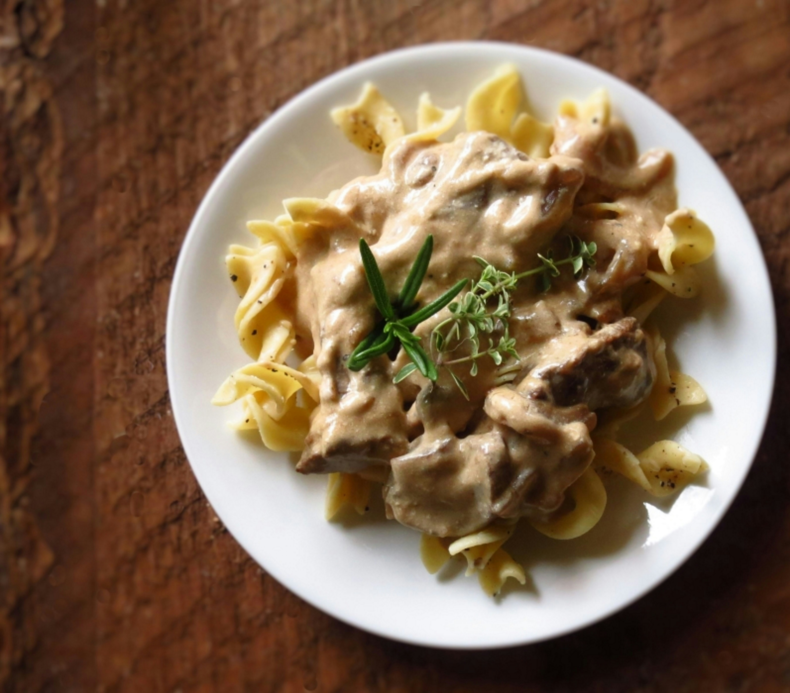

A creamy, savory beef and mushroom dish served over noodles, perfect for a cozy weeknight dinner.
Boil egg noodles according to package directions. Drain and set aside.
Season beef with salt and pepper.
Heat 1 tbsp oil in a large skillet over medium-high heat.
Sear beef quickly (1–2 minutes per side). Do not overcrowd.
Remove and set aside.
In the same skillet, add remaining oil.
Sauté onion and mushrooms for 5–7 minutes until softened and browned.
Add garlic and cook 30 seconds.
Sprinkle flour over vegetables and stir for 1 minute.
Gradually add beef broth, stirring to prevent lumps.
Stir in Worcestershire sauce and Dijon. Simmer until slightly thickened (3–5 minutes).
Reduce heat to low. Stir in sour cream (do not boil or it may curdle).
Return beef to the pan and simmer gently for 2–3 minutes until heated through.
Spoon over egg noodles and garnish with parsley.